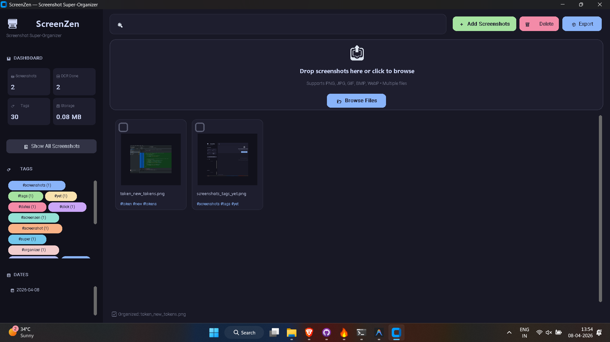

Stop Hunting.
Start Capturing.
Screen Zen runs in your background, instantly grabbing
every screenshot you take. OCR-driven tagging, real-time
organization, and zero manual work. Built for thinkers,
hackers, and creators.

"Screenshots litter desktop unorganized. It's impossible to find things later. Screen Zen solves this auto-magically."
Core Intelligence
Powered by Tesseract OCRAuto-Capture
Runs in the tray. Listens for screenshot events. Grabs them instantly without lifting a finger.
Instant OCR
Every word in your screenshot is indexed. Search for "meeting notes" or "color codes" and find it in seconds.
Auto-Tagging
Intelligent keyword extraction. Tags are created based on visual content as soon as the file is on disk.
Gallery View
A minimal, high-performance gallery to browse your history. Filter by date, tag, or text content.
Offline First
No cloud, no APIs, no tracking. Your data stays on your machine. Privacy by design.
Blazing Fast
Built with Electron and Webpack. Lightweight footprint, maximum performance.
The Workflow
Install & Run
One-click installation. Screen Zen sits quietly in your system tray, watching your native screenshot folders.
Take a Screenshot
Use your normal keys (PrtSc, Cmd+Shift+4). Screen Zen detects the file immediately and starts processing.
Search & Find
Open the app, type any text you remember seeing, and there it is. Open the original file with a single click.